InfinityART
Mobile app prototype
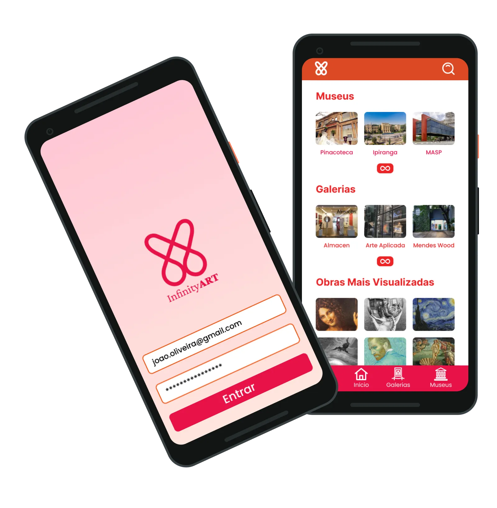
Introduction
InfinityART is an interactive virtual gallery mobile app prototype designed to make exploring art exhibitions highly engaging and accessible on smartphones. Developed over 2 months for an HCI course at the Federal University of ABC, the project followed the Double-Diamond design methodology to translate quantitative user research into high-fidelity prototype flows.
As the Lead Interface Designer, I collaborated closely with Amanda (UX Research) and Vinicius (Prototyping) to structure the interface, translate survey insights into user-friendly layouts, and develop interactive user personas. To ensure a premium experience, I have continued refining and polishing the visual UI design and usability post-course.
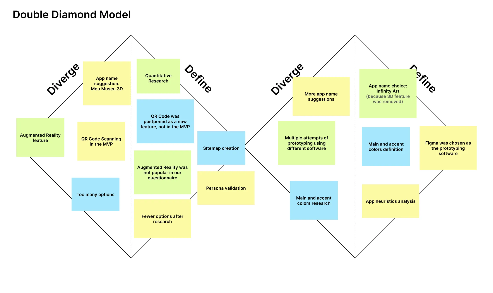
Persona validation
We conducted quantitative user research via Google Forms to validate our target audience hypotheses and refine our user personas. The survey analyzed key demographics and behaviors, including age, location, AR adoption, mobile usage, and interest in virtual museum tour simulations. Below are the key survey findings (in Portuguese) that formed the basis for our persona profiles.
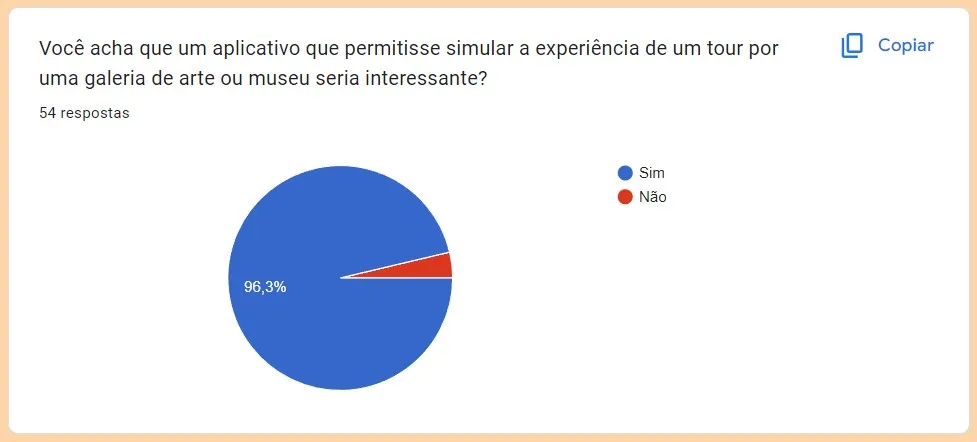
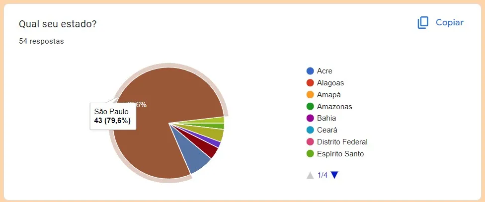
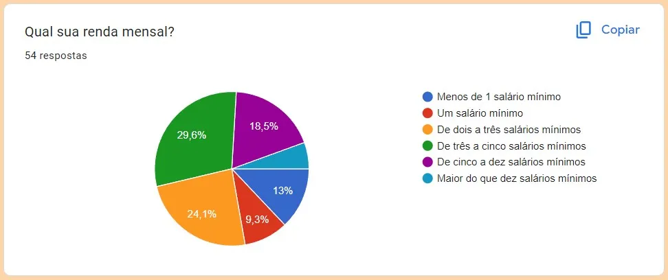
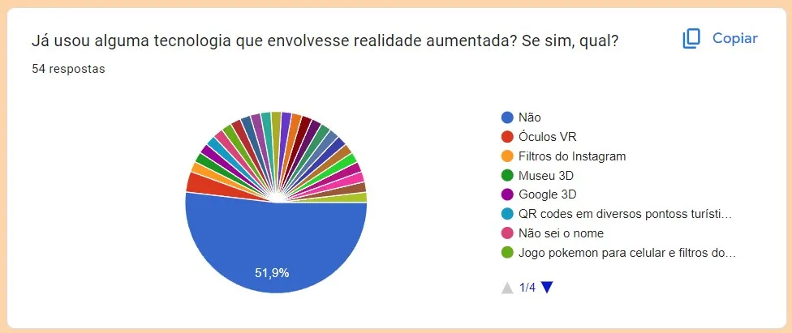
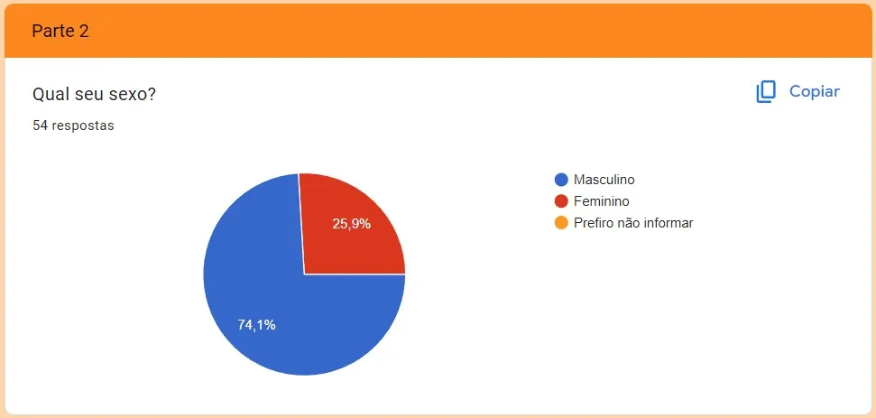
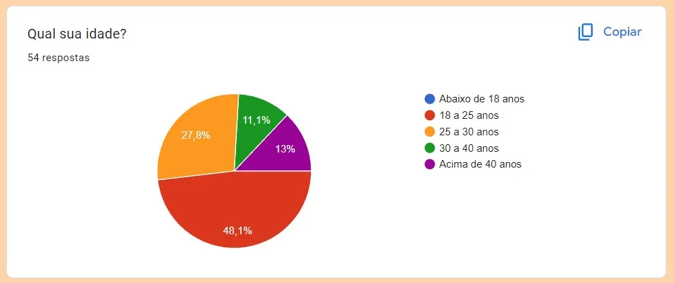
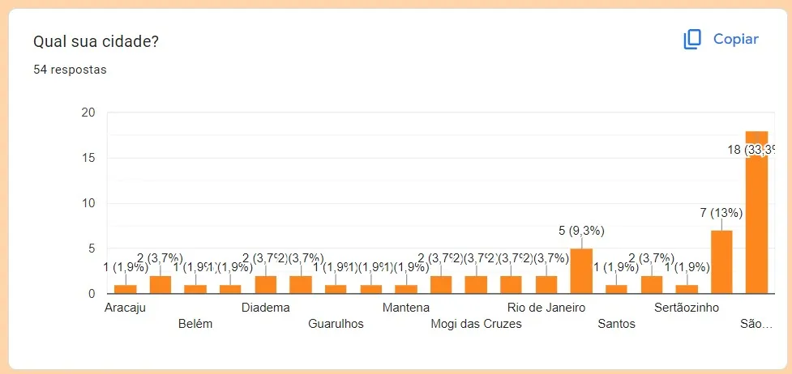
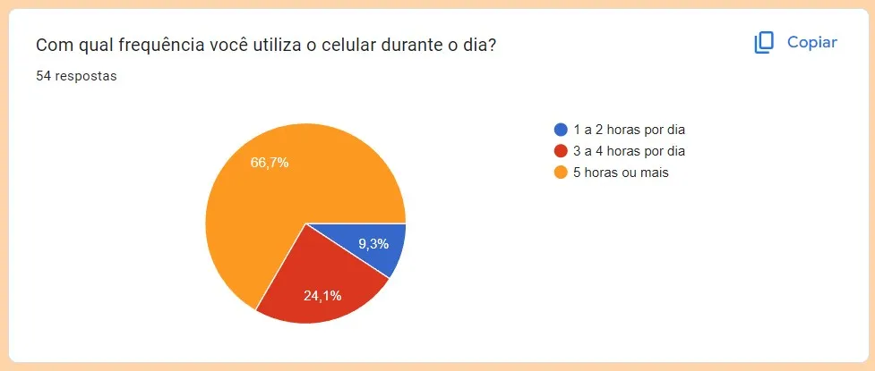
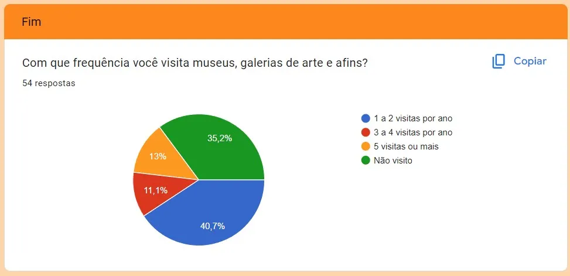
Validated Personas
Below are the two validated personas representing our primary target audience. To keep the project scope focused on the core MVP, we prioritized these primary profiles over secondary or anti-persona cards.
First persona
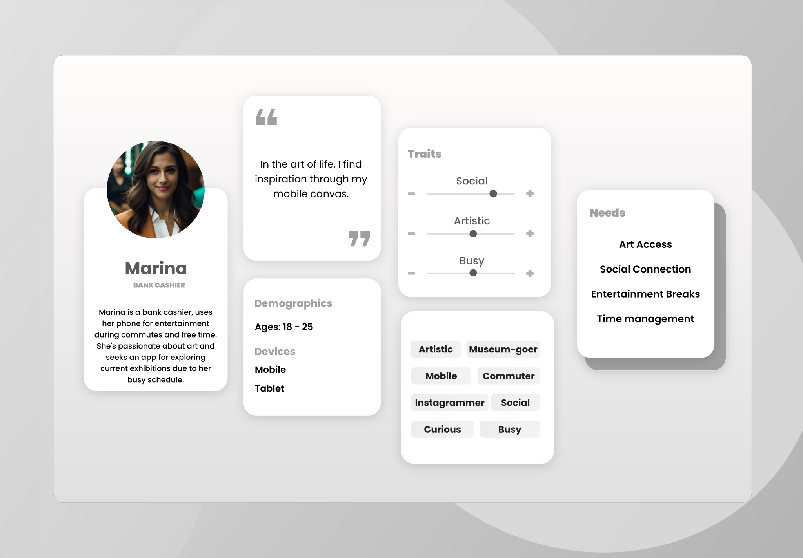
"I miss interacting with art during isolation, but museum websites feel very static and complicated to navigate on a phone. I want something that makes me feel inside the gallery, but simplified." — Marina, 24 years old (Validated Persona)
Second persona
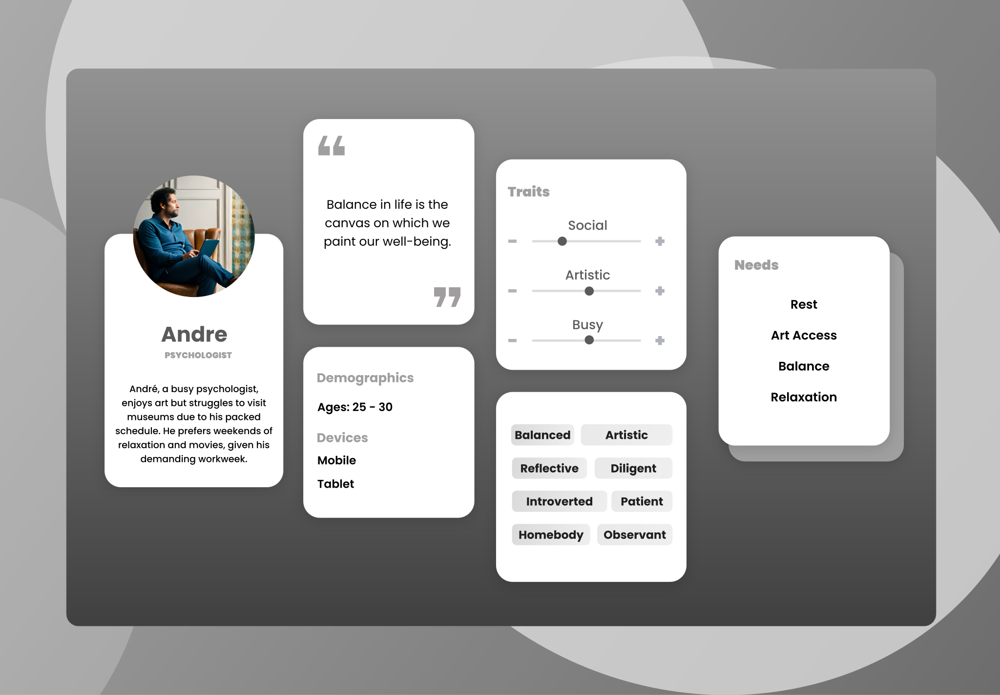
"I would like to quickly view historical details and facts about the paintings, as if I had an interactive museum guide in my pocket." — André, 28 years old (Validated Persona)
Competitive Audit
In this evaluation of virtual art gallery apps, we analyze Arte - Virtual Exhibitions and Smartify: Arts and Culture, comparing their features and usability. This assessment aims to assist users in selecting the most suitable platform for their art exploration needs.
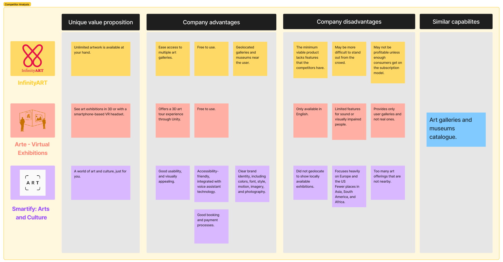
Audit Conclusions
As we explore these two rival apps, Arte - Virtual Exhibitions and Smartify: Arts and Culture, a few key points become clear:
Key takeaways about our competitors
Arte - Virtual Exhibitions offers a unique 3D art tour experience but lacks accessibility and a strong brand identity.
Smartify: Arts and Culture presents a comprehensive platform with strong accessibility features and a clear brand identity.
The choice depends on individual preferences.
Sitemap
Based on competitor analysis and mobile usability challenges, we designed a simple sitemap focused on a flat navigation hierarchy. By directly displaying nearby galleries and museums using geolocation and providing a secondary expansion list, we minimized user click-depth. This lean structure simplified the overall flow, serving as a clean, straightforward map for our MVP.
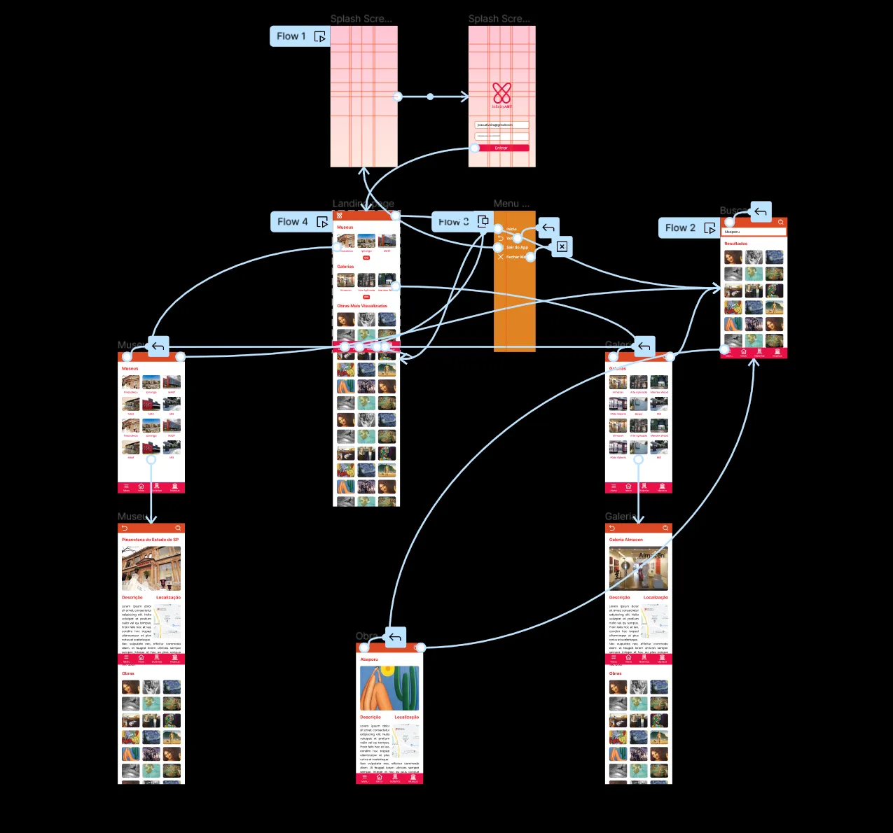
Interface Development
Below is the chronological evolution of the app interfaces, tracking the transition from a static Photoshop proof of concept to a highly optimized, interactive mobile Figma prototype focused on usability, accessibility, and modern aesthetics.
First Interface
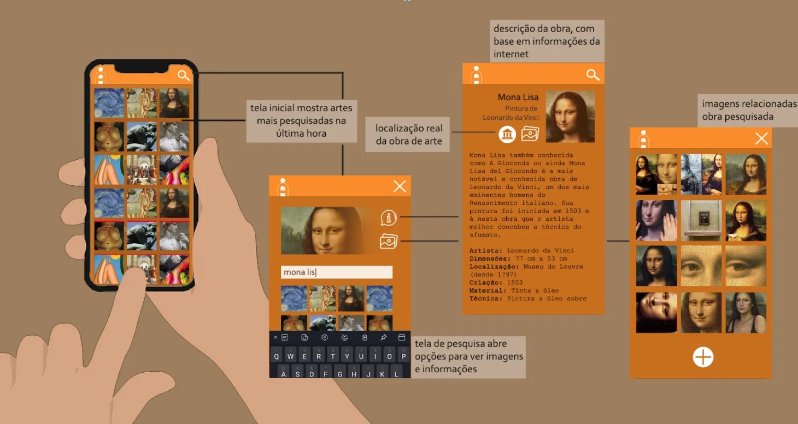
Created in Photoshop as a static proof of concept, V1 established the vertical infinite scroll browsing experience. The warm orange palette (#FA8C2B and #C76F1F) was chosen to evoke creativity. Due to academic deadlines, the layout was kept simple, focusing on information hierarchy (artwork title, artist, location, and technique) rather than visual polish.
Weights: Bold (700). Strong geometric sans-serif presence.
Weights: Regular (400). Crisp and readable.
Second Interface
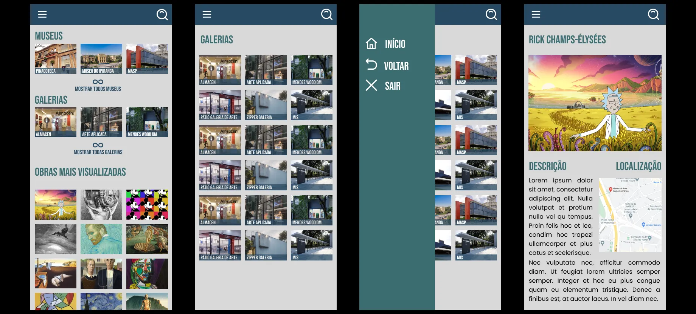
V2 introduced the first high-fidelity interactive Figma prototype to enable usability testing. We adopted a professional slate-blue palette (#284A63 and #3C6D71) to convey credibility and structured layouts around category grids. However, this draft had alignment inconsistencies (an uneven 11px grid) and used a hamburger menu, which increased mobile cognitive load. Artwork details were simplified to reduce layout clutter.
Weights: Bold (700). Clean geometric headings.
Weights: Regular (400), Medium (500). Standard modern sans-serif.
Final Interface (for now)
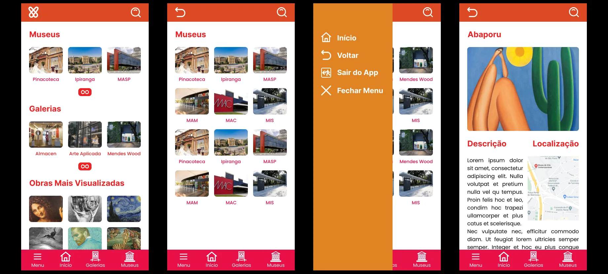
Developed post-course to reach full aesthetic potential, V3 adopts an expressive, bold palette (vibrant pink and sunset orange) inspired by modern Brazilian digital design to highlight the artistic nature of the platform. Spacings were standardized using a strict 8px grid. We dramatically improved mobile usability by replacing the top hamburger menu with a persistent bottom navigation bar for comfortable, one-handed navigation, adding clear labels to eliminate icon ambiguity.
Weights: Extra-Bold (800), Bold (700). Expressive and artistic headers.
Weights: Medium (500), Regular (400). Optimized for readability on mobile screens.
Weights: Medium (500). Adds a tech-savvy, structured UI feel.
To ensure spatial harmony and streamline front-end development, I established strict spacing guidelines:
- Grid Base: Multiples of 8px (8px, 16px, 24px, 32px) for all paddings, margins, and component heights.
- Touch Targets: Bottom navigation buttons and interactive icons maintain a minimum size of 48px x 48px to align with official accessibility standards (WCAG).
- Device Margins: A fixed 16px safety margin on screen borders to prevent text elements from touching mobile device edges.
- Visual Metaphor: Two interlinked infinity loops symbolize connection, framing an embrace that links users with boundless artistic possibilities.
- Typography: The selected serif typeface evokes the early post-printing press typography era, adding a timeless feel to the museum app services.
- Integration: The wordmark dynamically links "Infinity" and "Art", mirroring the physical embrace of the logo icon.
Using VisualEyes AI, we generated attention heatmaps of the home screen to compare user engagement between Version 2 (Teal) and the final Version 3 (Pink/Orange).
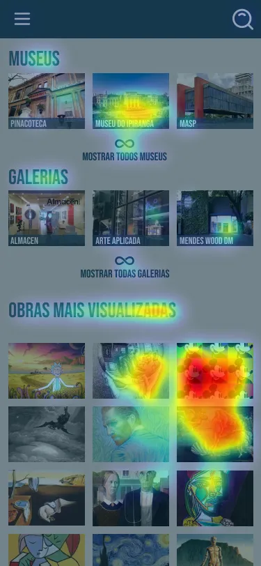
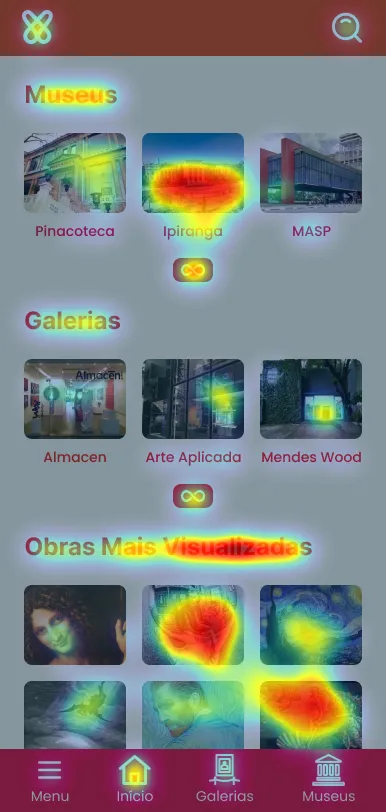
- Actionable Engagement: V3 significantly increased user attention focus on the primary action elements (accessing the home screen and active museum/gallery lists).
- Button Prominence: Replacing the V2 text button ("mostrar todas as galerias") with an animated infinity icon button inside V3 dramatically improved touch element visibility.
- Reduced Cognitive Load: Relocating secondary navigation from the top hamburger menu to a persistent bottom navigation bar improved mobile one-handed usability and eliminated menu layout drop-offs.
Live preview
Conclusion
It was a very interesting project to work on, enhancing a prototype created years ago by applying my current UX/UI knowledge to deliver an experience that retains the core concept but with a fresh design approach.
As mentioned in one of the subtitles, this is the final version for now, as everything can improve in light of new knowledge gathered along the way.
- Accessibility-first: The V2 hamburger menu was hard to reach on mobile. Shifting to a bottom navigation bar with text labels in V3 dramatically improved one-handed ergonomics.
- Predictive vs. Real Validation: AI attention maps (Visual Eyes) were highly effective for rapid contrast and layout checks, but qualitative testing with real users remains the ideal next validation step.
- Next Iteration: Perform color contrast accessibility checks for colorblind users on the vibrant gradients adopted in V3.